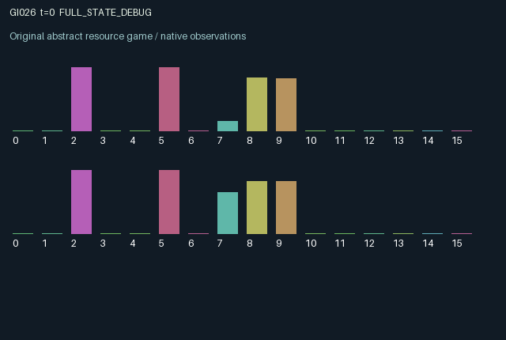

GI026 / LEGACY_ARRAY
Candidate astra-d2-00026: Endogenous extraction and delayed sensing
2 agents5 actions16 observation columns32 original horizonRuntime: PASS
Release verification episode
Untrained uniform legal actions. Actual JAX state sampled along the full original episode; full-state debug camera. No human performance or learning claim.

Run this game
crucibles play --game 26
Start Python locally, then open the address printed by the terminal. Installation, multiplayer, takeover and keyboard controls →
Objective, rewards & ending
Exact task contract
{
"termination": "Original kernel t >= 32; see mechanism and source"
}Declared per-step reward bounds: -1.0 to 1.0. Observability: source_defined.
Rules
Original mechanism document (historical status wording retained)
# Candidate astra-d2-00026: Endogenous extraction and delayed sensing Status: original parentless source authored from the supplied contract and whitelist. The author has not executed candidate code, initialized JAX, used a compiler or isolated validator, or measured learning. ## Causal mechanism There is one hidden, evolving scalar field and two extraction sites. Each agent knows its own fixed site offset and resource stock. Harvesting the positive or negative side pays according to the signed local field but removes local resource and moves the common field away from the harvested direction. The current reward therefore depends on a hidden quantity that both agents' previous actions helped change. An agent can instead take a noisy private measurement, relay its most recent measurement after subtracting its known site offset, or restore resources. A relay first enters an outgoing pending state and arrives at the counterpart's next transition. Measurement ages are carried through this delay. Sampling observes the field before that transition's extraction and drift; its displayed age is already one in the returned observation. Harvesting creates persistent interference for the counterpart's future measurements. The interference decays by half each step and receives a 0.35 increment from the other's harvest action. Restoration replenishes the restorer's site by 0.22 and the other site by 0.12, in addition to passive regeneration of 0.025. Restoration also damps the common field. This couples resource availability, information quality, and the underlying reward target rather than merely changing a payoff label. ## Actions and information The five actions are 0 sample, 1 relay the last valid measurement, 2 harvest negative, 3 harvest positive, and 4 restore. Harvest removes at most 0.30 resource. All actions are legal; relaying without a valid sample sends nothing but still incurs its action cost. The 16 observation columns are time, own sample, sample age, sample-valid flag, inbox message, inbox age, inbox-valid flag, own site offset, own richness, mean richness, own interference, outgoing-message-valid flag, own last extracted amount, own last reward, own last action, and other last action. The source normalizes time, samples, ages, offset, extracted amount, and actions. Both resource stocks can be reconstructed from own richness and the public mean; the field and counterpart offset remain unobserved. The inbox stores a bias-corrected, possibly noisy and stale field estimate rather than the counterpart's raw local observation. The pending value and age are stored in state, while the sender sees only the pending-valid flag and its own measurement history. Previous harvest rewards can also provide information about the field. ## Incentives, randomness, and reward bounds Harvest reward equals 0.45 times extracted amount times chosen sign times local field, plus 0.10 times extracted amount. Sampling, relaying, and restoration cost 0.015, 0.010, and 0.025 respectively. The clipped local field lies in [-1,1] and extraction is at most 0.30, so a harvest lies in [-0.105,0.165]. The other actions give only their stated nonpositive cost. A final explicit clip enforces [-1,1]. These are mathematical bounds from the source, not observed returns. The explicit step key supplies bounded private sensor noise and bounded common drift through separate subkeys. Noise amplitude depends on the counterpart-induced interference. The reset key supplies the initial field, site offsets, and richness. No randomness is obtained from external state. Current extraction can make future same-direction extraction less attractive for either role. Restoring or relaying incurs a private immediate cost and can benefit the counterpart later. Stale or noisy messages may be less useful than information inferred from actions and rewards. No beneficial communication effect is presumed. ## Relationship and limits This relates to generic active sensing, delayed communication, renewable resource externalities, and decision making with an action-dependent latent process. It is not a benchmark adaptation or a claim of a novel game class. Parent sources and outcome data were not supplied or read. Mechanism qualification, duplicates, compiler behavior, and learning effectiveness remain unassessed. At transition 32 the terminal state is retained; pending messages and remaining resources receive no extra terminal reward.
Commands
0Action 0; see mechanism and source
1Action 1; see mechanism and source
2Action 2; see mechanism and source
3Action 3; see mechanism and source
4Action 4; see mechanism and source
Roles & abilities
agent_0 Original legacy agent; see mechanism and source
agent_1 Original legacy agent; see mechanism and source
Observation permissions
Training receives only the original observation rows. Role cameras use declared visibility; debug cameras are explicitly marked. Local benchmark records log debug exposure and role takeover history.
Exact observation layout
[]
Entity visibility & attributes
[]
Actual verification & provenance
Per-game execution receipt
{
"game": "gi026",
"status": "PASS",
"verification_revision": 2,
"source_sha256": "3f95c7b758f67504c083eb23600f58f567d2f8f8ce5fccff747afc5b8408af9b",
"seed": 20261101,
"runtime": {
"jax": "0.4.38",
"numpy": "1.26.4",
"devices": [
"TFRT_CPU_0"
]
},
"dimensions": {
"num_agents": 2,
"observation_size": 16,
"num_actions": 5,
"max_steps": 32
},
"checks": {
"eager_reset": {
"status": "PASS",
"seconds": 1.0441317558288574
},
"observation_spaces_legal_masks": {
"status": "PASS",
"seconds": 0.1494126319885254
},
"eager_step": {
"status": "PASS",
"seconds": 0.9062540531158447
},
"jit_reset": {
"status": "PASS",
"seconds": 0.1520984172821045
},
"jit_step": {
"status": "PASS",
"seconds": 0.7131052017211914
},
"eager_jit_integer_parity_float_measurement": {
"status": "PASS",
"seconds": 0.0005168914794921875
},
"jit_vmap_reset": {
"status": "PASS",
"seconds": 0.26996612548828125
},
"jit_vmap_step": {
"status": "PASS",
"seconds": 0.6018521785736084
},
"outer_autoreset_api": {
"status": "PASS",
"seconds": 0.7388086318969727
},
"full_original_horizon_episode_and_render": {
"status": "PASS",
"seconds": 1.033398151397705
}
},
"human_scores": null,
"browser_controls": "PENDING",
"failures": [],
"elapsed_seconds": 6.792986869812012,
"float_parity_max_abs": 0.0,
"numerical_parity": "EXACT",
"raw_terminal_absorbing": "NOT_PART_OF_ORIGINAL_LEGACY_CONTRACT",
"terminal_outer_reset": "PASS",
"episode_steps": 32,
"scripted_random_returns": [
0.32527921302244067,
0.12743950472213328
],
"terminal": true,
"demo_information": "FULL_STATE_DEBUG",
"demo_frames": 33,
"render_roles_checked": 2
}Chromium control verification
{
"game": "gi026",
"status": "PASS",
"human_scores": null,
"engineering": true,
"checks": [
"catalog_selected_and_real_native_reset",
"dom_queue_and_native_step",
"second_participant_ownership_and_native_joint_step",
"all_roles_individually_controllable_no_role_cap",
"explicit_debug_camera",
"release_to_pure_ai_without_reset"
],
"ui_sha256": "15b5861d23b3c42811865c954d5a988280bbfd21cf8e93754be2437a027158c5",
"seconds": 3.289541482925415
}Original identity and file hashes
{
"id": 26,
"key": "gi026",
"title": "Candidate astra-d2-00026: Endogenous extraction and delayed sensing",
"summary": "",
"tags": [],
"family": "legacy_array",
"dimensions": {
"num_agents": 2,
"observation_size": 16,
"num_actions": 5,
"max_steps": 32
},
"source_sha256": "3f95c7b758f67504c083eb23600f58f567d2f8f8ce5fccff747afc5b8408af9b",
"manifest_sha256": "fdc7f8f491bff8f6648b10fbf9c80ab0e54814f4e7778841004fb982d6a18046",
"files": [
{
"file": "candidate.py",
"sha256": "3f95c7b758f67504c083eb23600f58f567d2f8f8ce5fccff747afc5b8408af9b",
"bytes": 6565,
"origin": "work/exp_2/astra_generation/discovery_v2/initial/candidate_00026/attempt_00/candidate.py"
},
{
"file": "mechanism.md",
"sha256": "1b51479523aa80b4e5961c08edd9a702f7a3abf9d44a327ad04a315c9ce1ba73",
"bytes": 4467,
"origin": "work/exp_2/astra_generation/discovery_v2/initial/candidate_00026/attempt_00/mechanism.md"
}
],
"original_status": "LEGACY_SOURCE",
"original_saved_replay": false,
"release_validation": "PASS",
"human_scores": null,
"browser_validation": "PASS"
}